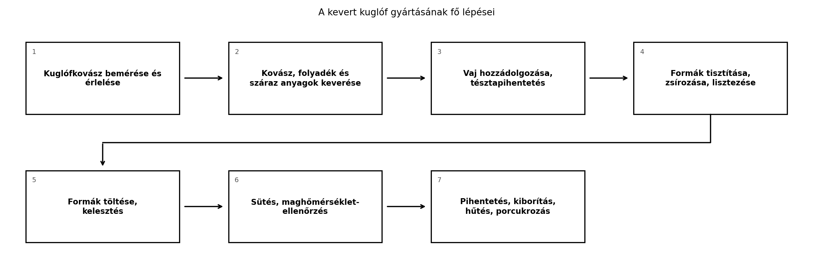

Képzelje el, hogy hétvégi rendelés érkezik a pékségbe: 10 darab, egyenként 600 g-os, lágy, vajas, tojásos, porcukorral beszórt kuglófot kell sütnie. A kuglóf akkor lesz szép, éles bordázatú, ha a kovász érett, a tészta lágy, a forma megfelelően zsírozott-lisztezett, a sütés pedig úgy átsüti, hogy a belseje puha marad, a héja viszont aranysárga. Ha a forma ragad, a kuglóf kiborításkor szakad; ha a kovász túlérik, a tészta savanykás, kevésbé rugalmas; ha túl hidegen sütjük, a közepén “szalonnás” marad. Ezért itt a finom pékáru-technológia és a pontosan kiszámított anyagnorma egyszerre tanulandó.

A kuglóf dúsított, élesztővel lazított finom pékáru, amelyet bordázott, középen kéményes vagy gyűrű alakú formában sütnek. A forma adja a jellegzetes koszorú formát, és a vékony, egyenletes falvastagság miatt a kuglóf gyorsabban és egyenletesebben süthető át, mint egy azonos tömegű, tömör kalácstészta.
Definíció. A kevert kuglóf a hazai sütőipari gyakorlatban olyan édes, tejes, vajas kuglóf, amelynek tésztáját édes kuglófkovásszal, vagyis előérlelt, dúsított előtésztával készítik. A kovász lisztet, tejet, kevés cukrot, vajat és élesztőt tartalmaz, ezért a tészta aromája gazdagabb, érése kiszámíthatóbb, a kész kuglóf pedig finomabb, jobban szeletelhető.
Típusát tekintve a kuglóf lehet:
A formák lehetnek hagyományos, zománcozott, fémből készült kuglófsütők vagy tapadásmentes bevonatúak. A forma előkészítése akkor jó, ha a kuglóf sütés után könnyen, szakadás nélkül kiborítható. A lépések:
Az alábbi ábra felső részén a forma metszete látható: a kémény (1) a vastag tésztagyűrűt belülről is átsüti, a bordázat (2) adja a jellegzetes mintát, a perem (3) a forma felső széle. A forma töltése tanulási példaként 50–60 %, a kelés utáni szintet szaggatott vonal jelzi. Az alsó képsor az előkészítés lépéseit (1–3) és a sütés utáni kiborítást (4) mutatja.
A jobb felső részlet a tipikus hibát mutatja: a mélyedésben megült zsiradéktócsa sütés közben felforr, a héjat áztatja, a kuglóf beragad és kiborításkor a bordázatnál szakad. A HTML-kiadásban a metszet részei rámutatással kiemelhetők, az előkészítés lépései lejátszhatók.
HACCP. A formák sérülése, lepattogzott zománca idegenanyag-kockázat; a sérült formát ne használd. A formaválasztó szert a gyártói adatlap szerint, élelmiszertől elkülönítve tárold, és csak élelmiszerrel érintkezésre engedélyezett készítményt használj. A pontos beszállítói követelményt a pékség HACCP-terve szerint ellenőrizd.
A kuglófkovász a teljes liszt egy részéből, tejjel/tejes folyadékkal, kevés cukorral, vajjal és élesztővel készül. A Péksütemény-kovászok és előtészták, a rozskovász gyakorlata alfejezetben tanultak szerint ez a dúsított előtészta nem savanyú, hanem inkább aromát, élesztőszaporulatot és jobb gázmegtartást ad. A kovász savanyodása itt nem kívánatos, mert a kuglófnak édeskés, tejes-vajas ízűnek kell lennie.
Definíció. A kovásznagyság () a kovászba kerülő liszt tömegét a teljes liszt tömegének százalékában adja meg:
A kovász-TA a kovász liszt- és folyadéktömegét a kovászlisztre vetíti:
Kevert kuglófnál tanulási példaként és használható (ellenőrizendő: üzemi technológiai lap). A kovász folyadéka itt tej, nem pedig víz; a tej tömegét ugyanúgy kezeljük, mint a kovászvizet.
A kovász nemcsak lisztből és tejből áll. A teljes lisztre vetített kevert kuglóf receptúra lehet például:
A kovászba kerül:
A tésztába a kovászon felül kerül a maradék liszt, tej, cukor, vaj, az összes tojás, só és a maradék élesztő. A kovász számított tömegét mindig egészben kell hozzáadni a tésztához; a benne lévő lisztet és tejet a napi anyagnormában már nem szabad újra, másodszor is bemérni.
Allergén. A kevert kuglóf allergén összetevői: glutént tartalmazó gabonafélék (búzaliszt), tojás, tej és tejtermékek (vaj; a margarin tej- vagy szójatartalma a beszállítói specifikáció szerint jelölendő). Dió, mandula vagy más diófélék használatakor ezek allergének. Kénezett mazsolánál a kén-dioxid/szulfit jelölendő, ha a késztermékben meghaladja a 10 mg/kg-ot (ellenőrizendő: 1169/2011/EU II. melléklet, beszállítói specifikáció); a mazsola maga nem allergéncsoport. Mindez a jelölésben, valamint a gyártási sorrendben külön kezelendő. A “gluténmentes” megnevezés ennél a receptúránál nem alkalmazható. Az adott allergént nem tartalmazó termék párhuzamos gyártásánál a közös kuglófforma, a közös kenőecset és a közös liszteszsák keresztszennyeződést okozhat; a pékség allergénkezelési terve szerint külön eszközöket és sorrendet kell alkalmazni.
A kevert kuglóf számítása a Kovászszámítások és a kovász dokumentálása alfejezetben tanult elvből indul: a teljes liszt a 100%, és abból számoljuk a kovászt, majd a tésztát.
Összefüggés. Ha a kevert kuglóf receptúrája lisztre vetítve , akkor a tészta tömege a liszt tömegének -szerese:
Ebből . Ha pedig késztermék-darabszámból indulunk, a feladási tömeg:
ahol a sütési és hűlési veszteség együtt, tanulási példaként kuglófnál 10–12% (ellenőrizendő: üzemi technológiai lap).
1. Számítási példa – kovász adagja 100 kg
liszthez.
Adott:
,
,
kovász TA = 170.
Keresett: kovász liszt, tej és kész kovász tömege.
A kovásztej:
A kovászban lévő további anyagok a teljes liszt 4% cukor, 4% vaj, 2% élesztő, azaz 4, 4 és 2 kg. A kész kovász:
Ellenőrzés: a kovász a teljes liszt 78%-át teszi ki; ebből a kovászliszt 40%, a tej, cukor, vaj és élesztő együtt 38%. A kovászliszt a teljes liszt 40%-a, ezért a tésztába marad 60% liszt.
2. Számítási példa – tészta tömege 100 kg
lisztből.
Adott a fenti receptúra.
Keresett: a kész tészta tömege.
A kovász már ebben az összegben benne van, mert a 40 kg kovászliszt, 28 kg kovásztej, 4 kg kovászcukor, 4 kg kovászvaj és 2 kg kovászélesztő is az összetevők között szerepel. A tésztába a kovászon felül így kerül:
A tészta további anyagai: 20 kg tojás, 1,2 kg só, 2 kg friss élesztő és a 78 kg kész kovász. Ellenőrzés:
A két úton számolt tésztatömeg egyezik, tehát a kovász anyagainak levonása helyes volt.
3. Számítási példa – rendelésből
anyagszükséglet.
Adott: 10 darab kuglóf, késztermék tömege
,
sütési és hűlési veszteség
.
Keresett: a feladási tömeg, a teljes tészta, a liszt és a kovász
anyagai.
A feladási tömeg darabonként:
A teljes tészta:
A liszt tömege:
Ebből a fő kovász- és tésztamennyiségek:
A kész kovász tömege a kovász összetevőiből:
Itt a 0,124 kg a kovászcukor és a kovászvaj, a 0,062 kg a kovászélesztő. A teljes kerekített anyagmennyiséget a technológiai lap mutatja. Ellenőrzés: , ami a kerekítések miatt 0,003 kg-mal tér el a 6,82 kg-tól; ez a tizedeljegy-pontosság miatt elfogadható.
A kevert kuglóf készítésekor a kovászt először önállóan érleljük, majd a kész kovászból és a többi anyagból lágy tésztát készítünk. A vajat csak részben vagy a dagasztás végén adjuk hozzá, hogy a zsiradék ne akadályozza a sikér kialakulását.
Kovászkészítés. A kovászanyagokat (liszt, tej, cukor, vaj, élesztő) lágy, egynemű keverékké dolgozzuk. A kovász hőmérséklete 24–26 °C legyen (tanulási példa, ellenőrizendő). 45–60 percig, lazán letakarva érleljük. Akkor érett, ha térfogata jól megnőtt, felülete domború, illata enyhén tejes-élesztős, nem savanyú.
Tésztakészítés. A kész kovászhoz adjuk a megmaradt tejet, a felvert vagy pasztőrözött tojást, a maradék élesztőt, majd a lisztet, sót, cukor maradékát. Addig keverjük, amíg a tészta egynemű, lágy, de nem ragacsos. Ezután fokozatosan adjuk hozzá a lágy vajat, és lassú fokozaton dolgozzuk bele. A kész tészta hőmérséklete 26–28 °C, felülete selymes, és az edénytől kissé elválik (tanulási példa).
Pihentetés. A tésztát 15–20 percig letakarva pihentetjük, hogy a sikér lazuljon, és a tészta könnyen formába tölthető legyen.
Sütés formában. A formákat az előzőek szerint zsírozzuk és lisztezzük. A formát 50–60%-ig töltsük, mert a kuglóftészta a kelesztésnél és a sütőben is erősen nő. A formázott tésztát 26–30 °C-on, 70–80% relatív páratartalom mellett 45–60 percig kelesztjük (tanulási példa). A kuglóf akkor megkelt, ha a tészta a forma magasságának kb. 80%-áig (1–2 cm-rel a perem alá) emelkedett; a többit a kemencerugás adja (tanulási példa).
Sütés. A kuglófot 175–185 °C-os kemencében sütjük, 600 g-os darabnál kb. 28–35 percig (tanulási példa, ellenőrizendő). A sütés kezdetén rövid, enyhe gőzölés adhat szép héjfényt, de a túl sok gőz ronthatja a bordázat élességét. A sütés akkor jó, ha a kuglóf belső hőmérséklete 94–96 °C, a héja aranysárga, a forma illeszkedő tésztafelülete száraznak tűnik.
Kiborítás. Sütés után a kuglófot 10–15 percig hagyjuk a formában hűlni. Ezután késsel, vékony spatulával szükség szerint lazítsuk a peremnél, majd határozott, de óvatos mozdulattal borítsuk ki rácsra. A kuglófot nem szabad azonnal porcukrozni, mert a cukor a meleg, párás felületen megolvad; előbb teljesen hűljön ki.
Porcukrozás. A teljesen kihűlt kuglófot átszitált, vaníliás porcukorral szórjuk meg egyenletesen. A porcukrot csak a tálalás vagy csomagolás előtt szórjuk rá, hogy a csomagolásban ne nyomódjon össze.
HACCP. Kritikus pont (CCP) a sütés utáni maghőmérséklet és a tojás-, tejtermék-tárolás hőmérséklete a HACCP-terv szerint; a kelesztés hőmérséklete és ideje minőségi pont / GHP-ellenőrzés (CCP csak akkor, ha a HACCP-terv így rögzíti). A pasztőrözött tojást 5 °C alatt tárold (ellenőrizendő: gyártói adatlap); a kelesztő hőmérséklete a technológiai lap felső határát (tanulási példa: 35 °C) ne haladja meg; a kuglóf csak akkor tekinthető átsültnek, ha a maghőmérséklet elérte az üzemi technológiai lapban rögzített értéket. A kész termék kiborítás utáni hűtési idejét és a hűtőtérben való tárolását is rögzítsd.
Egy pékségben a kuglóf rendszeresen beleragadt a formába. A pék csak a zsírozással foglalkozott, de a vajat túl vastagon vitte fel, és a forma mélyedéseiben megült. Sütés közben a vaj felforrt, a tészta héja részben sült, részben párolódott, a kuglóf kiborításkor a bordázatnál szétnyílt. A minőségi veszteség mellett allergén- és tisztítási gond is jelentkezett: a leégett vajmaradék ráégett a formára. A megoldás az volt, hogy a formát alaposan megtisztították, a kikenést vékony, egyenletes rétegben végezték, a felesleges zsiradékot még hidegen eltávolították, és a formát vékonyan lisztezték. A ragadási hiba megszűnt; a bordázat éles maradt, a kiborítás szakadás nélküli lett.
Cél: 10 darab, 600 g-os kevert kuglóf elkészítése a technológiai lap szerint.
Eszközök és anyagok: spirálos dagasztógép vagy bolygókaros keverő, kuglófformák, ecset, lisztes kézi szóró, mérleg, hőmérő, sütő, hűtőrács, porcukor szitáló.
Higiénia. Tiszta munkaruha, hajháló, fedett sebek nélkül, ékszer nélkül, a művelet előtt alapos kézmosás. A munkafelület, a dagasztóedény, az ecset és a formák tiszták, szárazak. Tojáshoz csak ellenőrzött, pasztőrözött tojáslevet használj; friss tojásnál a behűtött tojást közvetlenül felhasználás előtt törjed fel, és a tojáshéj azonnal kerüljön a szemetesbe.
Gépbiztonság. A dagasztógépet csak betanítás után, védőburkolattal, reteszeléssel működő állapotban szabad használni. A gép leállítása előtt ne nyúlj a tálba; a vaj hozzáadását a leállított gépnél, az előírt módon végezd. A sütőből való kivételnél hosszú ujjú, hőálló kesztyűt használj; a gőz a forró ajtó felnyitásakor az arc magasságában csaphat ki. A forró kuglófformát hőálló felületre, rácsra helyezd.
Lépések:
Ellenőrzési pontok: a kovász duplájára nőtt, illata tejes, nem savanyú; a tészta felülete sima, hőmérséklete 26–28 °C; a forma töltése felesleget nem ereszt; a kuglóf bordázata éles; a maghőmérséklet eléri a technológiai határértéket; a kiborított kuglóf nem szakadt.
Dokumentálás: rögzítsd a kovász készítésének idejét, hőmérsékletét és érlelési idejét, a tészta és a sütő hőmérsékletét, a sütési időt, valamint a maghőmérsékletet. A késztermék-ellenőrzésnél a tömegét és az érzékszervi jellemzőket is írd fel.
Termék: Kevert kuglóf.
Tétel: 10 db, késztermék tömege 600 g/db, feladási
tömeg 682 g/db, teljes tészta kb. 6,82 kg.
| Nyersanyag | Lisztre vetített % | Mennyiség (kg) | Megjegyzés |
|---|---|---|---|
| BL55 liszt | 40 | 1,244 | |
| Tej (3,5% zsír) | 28 | 0,871 | 10–15 °C |
| Kristálycukor | 4 | 0,124 | |
| Vaj/margarin | 4 | 0,124 | lágy |
| Friss élesztő | 2 | 0,062 | elmorzsolt |
| Kész kovász | — | 2,425 | kovász-TA ≈ 170 (liszt+tej) |
| Nyersanyag | Lisztre vetített % | Mennyiség (kg) | Megjegyzés |
|---|---|---|---|
| BL55 liszt | 60 | 1,866 | |
| Tej (3,5% zsír) | 14 | 0,435 | hideg |
| Kristálycukor | 18 | 0,560 | |
| Vaj/margarin | 26 | 0,809 | lágy |
| Pasztőrözött tojáslé | 20 | 0,622 | hűtött |
| Só | 1,2 | 0,037 | |
| Friss élesztő | 2 | 0,062 | |
| Kuglófkovász | — | 2,425 | a fenti kovász |
| Tészta összesen | — | 6,816 | kerekítésből 6,817 kg |
Műveleti paraméterek:
Allergének: glutén (búzaliszt), tojás, tej (tejfehérje). Margarin: a tej (savó, tejfehérje, vaj), illetve a szója jelenléte a beszállítói specifikáció szerint jelölendő; a technológiában használt vaj tej allergén. A lisztport más termékektől elkülönítve kezeld allergénszennyezés elkerülésére.
HACCP- és minőségi pontok: a tojás/tej hűtött tárolása; a kovász és a tészta hőmérséklete; a kelesztő hőmérséklete; a sütési maghőmérséklet; a kiborítás előtti várakozási idő. A késztermék minőségi jele: aranysárga, vékony héj, éles bordák, puha, egyenletes bél, édeskés, tejes-vajas illat. A számok tanulási példák, ezért az üzemi technológiai lap és a gyártói adatlap szerint ellenőrizendők.
A kevert kuglóf akkor jó, ha a formára jellemző szabályos koszorú alakja megtartott, a bordázat éles, a héja egyenletesen aranysárga, fényes, vékony. A bélzete laza, egyenletesen apró lyukú, vajzsírosan puha, nem ragacsos és nem száradt. A termék mérhető jellemzője a tömeg: 600 g-os kuglófnál a csomagolás előtt ellenőrizzük a tömegtűrést (ellenőrizendő: üzemi előírás). A maghőmérséklet mérésével az átsültség; a kiborítás utáni tömeggel a sütési-hűlési veszteség ellenőrizhető. A porcukrozás akkor megfelelő, ha egyenletes, vékony, nem olvadt meg.
1. feladat (A)
Magyarázd el, mit jelent a kevert kuglóf kovásza, és miért kell a
kovászban lévő tejet a tészta folyadékmennyiségéből levonni.
2. feladat (A)
Számítsd ki, hogy 8 kg teljes lisztből,
,
kovász-TA 170 esetén mennyi kovászliszt, kovásztej és mennyi tésztaliszt
szükséges.
3. feladat (B)
Egy kevert kuglóf receptúrájában a lisztre vetített összetevők: liszt
100%, tej 42%, cukor 22%, vaj 30%, tojás 20%, só 1,2%, élesztő 4%.
Mennyi a teljes tészta tömege, ha 2500 g lisztet használsz? Ellenőrizd,
hogy a tészta tömegszázaléka 219,2%.
4. feladat (B)
Rendelés érkezik: 12 darab, 550 g kész kuglóf. A sütési-hűlési veszteség
11%. Számítsd ki a darabonkénti feladási tömeget, a teljes tésztát, a
szükséges lisztet és a kész kovász tömegét
(,
kovász-TA 170, a kovász adalékanyagokkal együtt a teljes liszt
78%-a).
5. feladat (C)
Válassz ki három kritikus ellenőrzési pontot a kevert kuglóf
gyártásában. Mindegyikre adj meg: veszély, lehetséges határ, monitoring,
helyesbítés. Az értékeket tanulási példaként, ellenőrizendő jelöléssel
írd.
6. feladat (D)
Sütés után a kuglóf maghőmérséklete 88 °C. A héja szép színű, de a
bordázatnál a tészta lágy. Mi lehet a hiba, és mit tennél? Hogyan
előzhető meg a következő tételnél? Figyelj arra, hogy a 88 °C tanulási
példa, nem szabványhatár.
7. feladat (D)
Az Omlós tészta és omlós tésztából készült
termékek alfejezet témája felé figyelve: miért kell a zsiradékban
gazdag tésztánál a forma előkészítést és a hűtést másként kezelni, mint
a kenyértésztánál? Válaszodban utalj a kuglófnál tanult zsiradékolási és
hűtési lépésekre.
Önellenőrzés – válaszok
1. feladat megoldása
A kevert kuglóf kovásza édes, tejes, vajas előtészta, amelyet a teljes
liszt meghatározott hányadából, tejből, kevés cukorból, vajból és
élesztőből érlelnek. A kovászban lévő tej része a tészta összes
folyadékmennyiségének; ha a tésztához mégis a teljes tejmennyiséget
adnánk, a tészta lágyabb, ragacsosabb lenne, és a receptúra TA-ja
eltolódna.
2. feladat megoldása
Adott:
,
,
kovász-TA 170.
Kovászliszt:
.
Kovásztej:
.
Tésztaliszt:
.
Ellenőrzés: a kovászliszt és a tésztaliszt összege 8 kg, a kovásztej a
teljes tej része.
3. feladat megoldása
Adott:
.
A tészta tömegszázaléka:
.
A tészta tömege:
.
Ellenőrzés:
,
tehát 219,2%.
4. feladat megoldása
Adott:
,
,
.
Feladási tömeg:
.
Teljes tészta:
.
Liszt:
.
Kovászliszt:
.
Kovásztej:
.
Kész kovász:
(mert a kovász a teljes liszt 78%-a).
Ellenőrzés: a tészta a kovász és a maradék anyagok összegekként is 7,416
kg körül alakul.
5. feladat megoldása
- Nyersanyag-tárolás: veszély a tojás/tej
mikrobaszaporodása; határ pl. hűtőtér 2–5 °C; monitoring hőmérő;
helyesbítés: hűtőbe helyezés, hőntartó hiba esetén a tétel leállítása
(ellenőrizendő). - Kovászérés: veszély a túlérés,
élesztőgátló savanyodás; határ 24–26 °C, 45–60 perc; monitoring óra,
hőmérő, érzékszerv; helyesbítés: rövidebb érlelés, hűvösebb kovász. -
Sütés: veszély a nyers mag, tojás- és tejbiztonsági
kockázat; határ 94–96 °C maghőmérséklet; monitoring maghőmérő;
helyesbítés: vissza a sütőbe, ha túl alacsony; túlsült tételnél
elkülönítés, minőségrontó selejt.
6. feladat megoldása
A 88 °C maghőmérséklet azt mutatja, hogy a kuglóf nincs kellően átsülve,
hiába szép a héja. A hiba oka lehet túl forró sütő, túl rövid sütési idő
vagy túl vastag tésztaréteg. Ilyenkor a nyers, tojásos-tejes tésztát
vissza kell sütni, vagy ha már nem éri el a biztonságos
maghőmérsékletet, a tételt el kell különíteni. Megelőzés: ellenőrizd a
sütő hőmérsékletét, a forma töltését, és a sütés vége előtt mérd a
maghőmérsékletet.
7. feladat megoldása
A zsiradékban gazdag tésztánál a zsiradék a forma felületén könnyebben
megolvad, a tészta lágyabb, ezért a formát vékonyan, de egyenletesen
kell kikenni, és a kuglófot sütés után a formában pihentetni kell. Az Omlós tészta és omlós tésztából készült termékek
alfejezetben a tészta még magasabb zsiradéktartalmú, és a tésztát hűtve
kell tartani, hogy a forma kikenése és a nyújtás közben ne ragadjon. A
kuglófnál tanult hőfokváltás (sütőben meleg, utána langyos pihentetés)
és a zsiradék vékony filmként való használata közvetlenül előkészíti az
omlós tészta formakezelését.
A kevert kuglóf édes, tejes, vajas előtésztával készült dúsított kelt finompékáru. A kuglófkovász a teljes liszt egy részéből, tejből, kevés cukorból, vajból és élesztőből áll, és a tésztának jobb aromát, gázmegtartást és kiszámítható érést ad. A számítás mindig a teljes lisztből indul: , a kovász folyadékát a kovász-TA alapján számoljuk, és a kovász anyagait a tészta összes anyagából levonjuk. A kevert kuglóf teljes tészta tömege a lisztre vetített százalékok összegéből, a feladási tömeg pedig a késztermék tömegéből és a sütési-hűlési veszteségből számítható. A forma vékony zsiradékolása-lisztezése, az 50–60%-os töltés, a 26–30 °C-os kelesztés, a 175–185 °C-os sütés és a 94–96 °C maghőmérséklet (tanulási példák) együttesen biztosítják a szép, puha, jól kiborítható kuglófot. Továbbvitt eredmény: a zsiradékban gazdag lágy tészta hidegen tartása, a forma-előkészítés és a sütés-hűtés közbeni tömegveszteség számítása az Omlós tészta és omlós tésztából készült termékek alfejezetben használjuk fel.